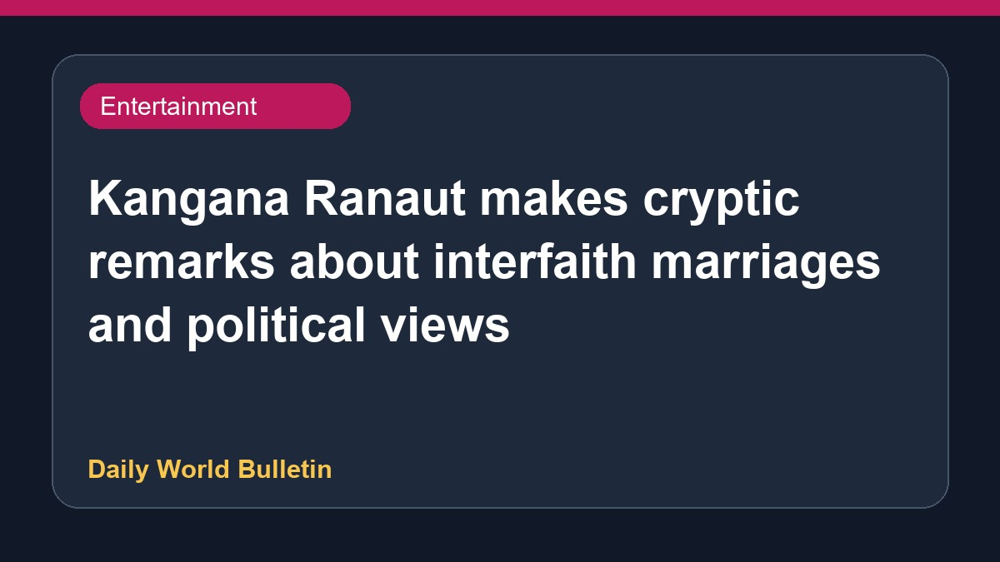

Kangana Ranaut makes cryptic remarks about interfaith marriages and political views

Actor and politician Kangana Ranaut recently shared cryptic social media posts that sparked speculation among internet users regarding actor Sonakshi Sinha. Ranaut stated that individuals often align with Leftist ideologies after interacting with Islamists, and mentioned that people change their behavior and appearance following interfaith marriages. Additionally, Ranaut described herself as a previously moderate Hindu who now aspires to become an awakened Hindu. Media reports highlighted various reactions to these statements across different news platforms, while specific details about the intended subjects remain limited.
Original source: Entertainment Sources
Kangana Ranaut takes a swipe at Sonakshi Sinha? ‘As soon as they marry Islamic people…’ - The Indian Express ↗
Kangana Ranaut takes a swipe at Sonakshi Sinha? ‘As soon as they marry Islamic people…’ - The Indian Express ↗